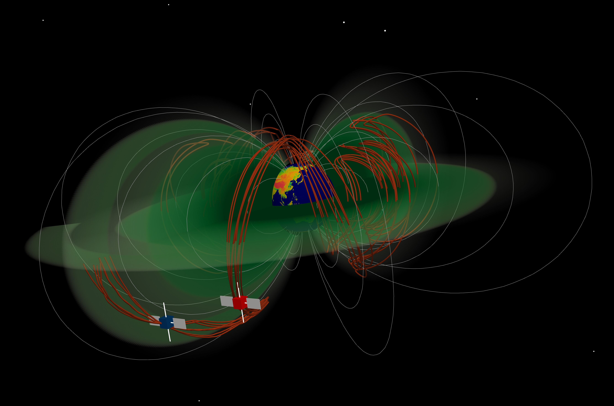

1. The effects of plasmaspheric plume on whistler-mode hiss waves
The plasmaspheric plume is the generator and waveguide of hiss waves. The plasmaspheric plume can extend from the plasmaspheric core outward to the magnetopause.
Compared to the plasmaspheric core, the plasmaspheric plume is more susceptible to infiltration by energetic electrons. These energy electrons with temperature
anisotropy can effectively generate hiss waves within the plasmaspheric plume through linear and nonlinear instabilities.
Simultaneously, the boundary layer of the plasmaspheric plume and its rich density ducts inside can guide hiss waves for long-distance migration over an extended period, ultimately filling most of the plasmasphere.
